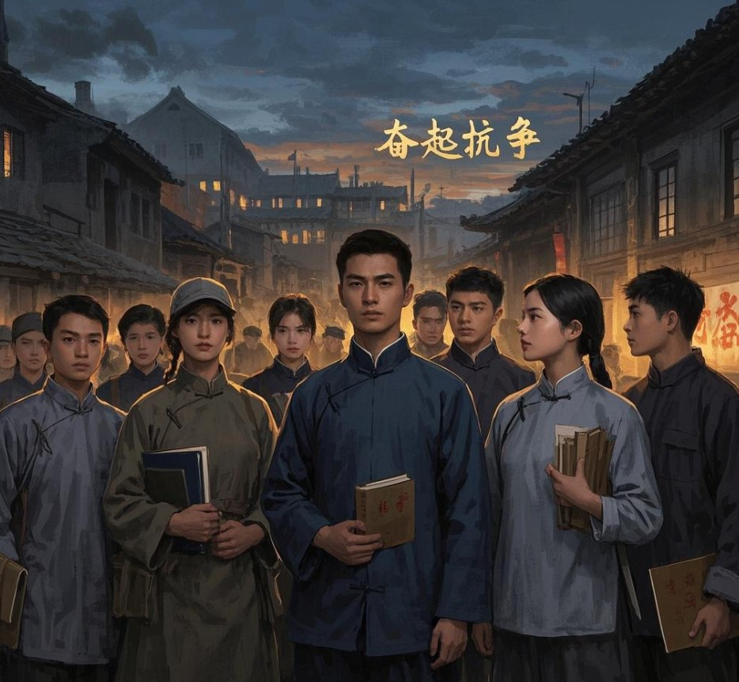

第二幕：新华门前的呐喊

地点：新华门 画面：经过艰难的跋涉，学生们终于冲破西直门的封锁，来到新华门前。他们整齐地排列着，高举标语，上面写着 “反对华北自治”“还我河山” 等醒目字样。学生们神情严肃而激动，目光紧紧盯着新华门内。 旁白：冲破重重阻碍的学生们，满怀希望来到新华门，期望国民政府军事委员会北平分会代委员长何应钦能直面他们的诉求，共商抗日救国大计。 学生代表 E：（上前一步，大声向门口卫兵说道）请何应钦代委员长出来，我们有抗日诉求要当面陈述！ 画面：许久，何应钦并未现身，只派秘书侯成出来应付。侯成一脸不耐烦，态度傲慢。 侯成：（挥挥手，语气敷衍）你们这些学生，不要聚众闹事，政府自有考量，赶紧回去！ 学生团员 F：（愤怒地指着侯成）这是敷衍！我们要的是实实在在的抗日行动，不是空话！ 学生团员们：（齐声高呼，声浪一波高过一波）打倒日本帝国主义！停止内战，一致对外！何应钦，出来！ 画面：面对侯成的推诿和敷衍，学生们的愤怒达到顶点，他们高唱《义勇军进行曲》，激昂的歌声在新华门上空回荡。 学生团员们：（激昂高歌）起来！不愿做奴隶的人们！把我们的血肉，筑成我们新的长城…… 旁白：请愿无果，学生们的愤怒如汹涌的潮水，他们转身走向街头，开始更大规模的示威游行。“一二・九” 运动就此全面爆发，他们的呐喊声，唤醒了更多国人的爱国热情，成为中国青年运动史上一座不朽的丰碑，为抗战胜利奏响了激昂的序曲 。